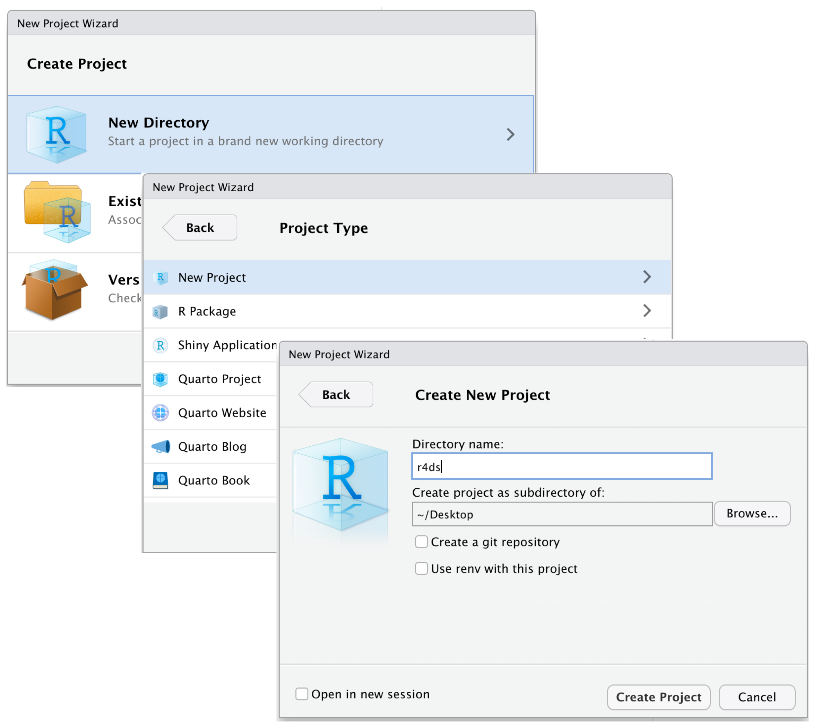

# Without R Projects
getwd()Appendix E — Reproducible workflows
One of the strengths of using code for data cleaning, analysis and visualisation is that, compared to point-and-click software, code is easier to share and use to reproduce results. However, every messy code script won’t magically run on another person’s computer (or even in a few months on your own computer) if a few steps aren’t taken to ensure code can be reliably run again. These steps include small but meaningful things like managing folders/file paths, tracking packages, and documenting what certain code snippets are meant to do.
Without the ability to reproduce results, it is very difficult to verify or build on previous findings. Research finds that code sharing isn’t very common in ecology and evolution research (Kimmel, Avolio, and Ferraro 2023), and when code is shared, a surprisingly small proportion of coding workflows run from start to finish (Culina et al. 2020; Roche et al. 2015). Taking steps to improve the reproducibility of your code will improve the usefulness and longevity of your analyses.
This chapter details how to improve the reproducibility of your R code workflows. Many of these steps were originally described in this Nature Eco Evo blog.
For another comprehensive summary about reproducibility and using R, see the Reproducible Workflow chapter in Telling Stories with Data.
E.1 What does reproducibility mean?
Reproducibility refers to the ability for a result or output to be reliably returned again when the same workflow is run again. Reproducibility is important for scientific progress because if others can’t reproduce a result, it’s impossible to verify whether that result is true, or not (and whether we should update our opinion as a result).
NoteExample scenario
Let’s say a scientific paper claims that a species of frog has an 80% probability of shifting its distribution southward by 60 kilometres. Without being able to reproduce the result (or the data on which that result is based), it’s difficult to know how trustworthy this statistic really is or the extent that this result should affect our understanding of this species. What factors are influencing this statistic? What is the sample population that this statistic was derived from? What data cleaning steps were made prior to analysis?
A reproducible workflow—from raw data to analysis to the the final result—allows us to at least attempt to answer some of these questions!
Data cleaning is an essential step of an analytic workflow. However, there are many different ways people can choose to go about data cleaning. Without knowing how a “clean” dataset was produced from raw data, or without the ability to reproduce the cleaned dataset yourself, entire analyses can go to waste because they can’t be run again, much less reproduce an individual result!
E.2 Reproducible environments
To allow coding scripts to run again, it’s important to be able to reproduce the environment in which the original code was successfully run. In R, this usually involves setting your working directory correctly so that files and packages can be located and loaded1. Below are several ways to make working environments better for sharing.
E.2.1 R projects
R projects are the best way to set project directories when using R Studio. R Projects create .Rproj files that tell R Studio what the top directory is for a project. Opening an R project (either in R Studio or by opening the Rproj file) then automatically opens the project directory and sets the working directory. All file paths will stem from that top directory while using that R project.
To create a new R Project, use File –> New Project.

Without R projects, the default directory is automatically set to wherever your R package library is stored locally.
[1] "#> [1] /Users/UserName/Documents/"With R Projects, the default directory is automatically set to start at the top folder of your project directory.
# With R Projects
getwd()[1] "#> [1] /Users/UserName/Documents/Projects/my-project-name/"R projects simplify folder/file paths and allow projects to be shared more easily between different users on different machines.
E.2.2 here
File paths can be fragile. Small mistakes can prevent a file from being found, including misspellings or the use of a / rather than a \. The here package sets safe file paths for project-oriented workflows. The here package sets the path relative to the top-level directory, meaning it works seamlessly with R Projects.
library(here)
here()[1] "C:/Users/Dax/Documents/Github/my-project"The here package also automatically adds slashes for better compatibility across operating systems, and a lower chance of small mistakes breaking file paths.
here("data", "file-name.csv")[1] "C:/Users/Dax/Documents/Github/my-project/data/file-name.csv"E.2.3 renv
The renv package helps users create reproducible environments for R projects. The package documents the packages and package versions used in a project in a lock.file. This file can be used by renv to restore the environment and packages used to run the original script.
There are three main, simple functions used by renv:
renv::init() # initialise a renv library & lockfile
renv::snapshot() # update lockfile with current package library
renv::restore() # restore environment in lockfileE.3 Version control
Research and data science projects evolve over time. Many versions of files are saved, updated and revised over a project’s lifetime. Tools like Git and Github, outlined in the Git chapter, help with version control of files in a repository. Using version control allows file changes to be updated, and allows file versions to be reverted to an old version that previously ran if an issue arises. Git and Github have become incredibly useful tools for collaboration in the research and data science communities.
E.4 Documentation
Although you might know the context of your analytic decisions at the time of analysis, other people who use your workflow (or even your future-self) might not. Clear documentation makes a huge difference to reproducibility.
Use clear object names and function names to make analyses easier to read or understand. Document decisions and what code blocks/chunks are meant to do. Similarly, document interpretations of any analytic output and any decisions made in response to a result.

E.4.1 Quarto
Quarto is a scientific and technical publishing toolset made by Posit. Quarto makes it possible to convert coding scripts and projects into articles, presentations and books (like this one!).
Quarto files are useful for reproducibility because they make it possible to render final version of a script or analysis. Over the process of building websites to document our own code for analyses and visualisations, we discovered that rendered documents are useful for documenting and sharing workflows. We recommend rendering final analyses (Quarto defaults already look very nice) and saving rendered files in one place. Rendered documents will allow faster lookup, easier sharing, and documentation of analyses that ran from start to finish (which makes fixing future issues easier).
E.5 Code review
Outside of data science tools to improve reproducibility, code review can be revolutionary for improving code reproducibility (Ivimey-Cook et al. 2023). Asking others to review your code, though scary, can provide opportunity to identify ways to make code more efficient and stable.
A common way to first learn to set a working directory in R is to use the dropdown toolbar to navigate to Session –> Set Working Directory, or use
setwd(). Both of these methods are poor practice for reproducibility because they require users to manually enter paths that are prone to break when the script is opened on another computer or in a new location.↩︎